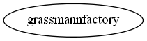

Master index
Index for manopt\manifolds\grassmann
Dependency Graph for manopt\manifolds\grassmann

Generated on Mon 06-Jul-2015 21:55:35 by
m2html
© 2005
 Master index
Master index Master index
Master index